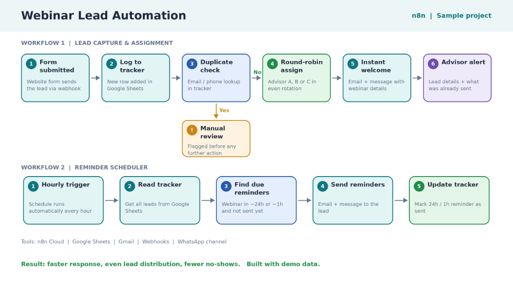

The challenge
Inbound leads were sitting in forms and inboxes with no priority, and follow-up was slow. Sales could not tell which leads deserved attention first.
The solution
I built an n8n workflow that captures each lead, creates or updates the HubSpot contact without duplicates, and asks OpenAI for a score from 0 to 100 with a short reason. Hot leads create a task and a Slack alert; every lead gets a personalized follow-up sequence.
How it works
- CaptureA website form sends each new lead to n8n.
- Sync to HubSpotThe contact is created or updated, with no duplicates.
- AI scoringOpenAI scores the lead from 0 to 100 and explains why.
- Route hot leadsHigh scores create a HubSpot task for a sales rep and trigger a Slack alert.
- Follow upA personalized email sequence runs and stops automatically when the lead replies.
- Log everythingAll activity is logged on the HubSpot contact.
Key features
- Website form lead capture
- HubSpot create-or-update without duplicates
- AI lead scoring with a reason
- Sales tasks and Slack alerts for hot leads
- Follow-up sequence that stops on reply
- Full activity log on each contact
Results
- Every lead is answered quickly
- Sales focuses on the hottest leads first
- A clean, complete CRM history
Demonstration workflow built with sample data.
Other projects

Webinar sign-ups are logged, assigned to advisors by round-robin and reminded 24 hours and 1 hour before.

A daily n8n pipeline that finds, verifies, scores and syncs B2B leads to HubSpot with personalized outreach.

An n8n agent that writes personalized recruiter emails, gets human approval in Slack and handles follow-ups.